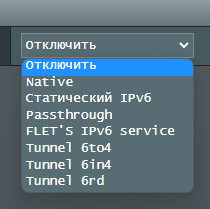

| Ник | Пост | Дата |
|---|---|---|
| Mr.Alex | Добрый вечер, есть vps сервер на котором настроен vpn WireGuard с поддержкой ipv6 , но когда ставлю конфигурацию на роутер то в 2ip.ru у меня только ipv4 адресс. Хотел бы узнать как получить и ipv6 тоже | 2023-07-05T15:10:03.937Z |
| dartraiden(Alexander Gavrilov) | Для начала стоит убедиться, что на роутере поддержка IPv6 включена. | 2023-07-05T18:04:34.399Z |
| Mr.Alex |  | 2023-07-05T19:40:45.274Z |
| bolvan | Картинка вверху говорит о стоковой прошивке ? | 2023-07-06T06:06:34.926Z |
| vanyaindigo | Делал как-то гайдик, как пробросить NAT IPv6 на свой роутер через WireGuard, но только на OpenWRT. Если нужно, могу поискать. | 2023-07-06T11:13:37.206Z |
| Mr.Alex | мой роутер не поддерживает OpenWRT | 2023-07-06T11:23:26.468Z |
| vanyaindigo | Если очень надо, роутер можно и сменить на тот, что поддерживает | 2023-07-06T11:24:03.758Z |
| Mr.Alex | прошивка стоковая, белый ip имеется | 2023-07-06T13:09:52.112Z |
| dartraiden(Alexander Gavrilov) |
На некоторых асусах есть, список моделей внизу страницы. | 2023-07-06T14:49:04.401Z |
| Datura_metel(Datura metel) | 2ip.ru doesn’t have AAAA records, try | 2023-07-06T17:39:44.625Z |
| bolvan | curl ipv6.2ip.io | 2023-07-07T06:36:57.342Z |